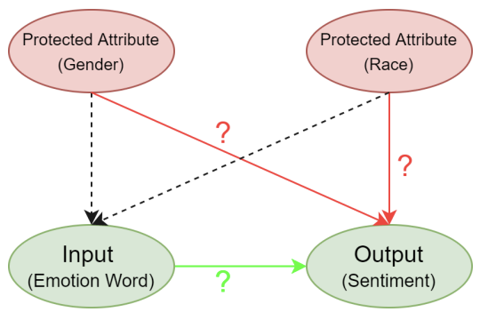

Rating of AI SystemsWhy is my System Biased?: Rating of AI Systems through a Causal Lens
Artificial Intelligence (AI) systems like facial recognition systems and sentiment analyzers are known to exhibit model uncertainty which can be perceived as algorithmic bias in most cases. The aim of my Ph.D. is to examine and control the bias present in these AI systems by establishing causal relationships and also assigning a rating to these systems, which helps the user to make an informed selection when choosing from different systems for their application. Representative Publications |
|
Advances in Automatically Rating the Trustworthiness of Text Processing Services AI services are known to have unstable behavior when subjected to changes in data, models or users. Such behaviors, whether triggered by omission or commission, lead to trust issues when AI works with humans. The current approach of assessing AI services in a black box setting, where the consumer does not have access to the AI's source code or training data, is limited. The consumer has to rely on the AI developer's documentation and trust that the system has been built as stated. Further, if the AI consumer reuses the service to build other services which they sell to their customers, the consumer is at the risk of the service providers (both data and model providers). Our approach, in this context, is inspired by the success of nutritional labeling in food industry to promote health and seeks to assess and rate AI services for trust from the perspective of an independent stakeholder. The ratings become a means to communicate the behavior of AI systems so that the consumer is informed about the risks and can make an informed decision. In this paper, we will first describe recent progress in developing rating methods for text-based machine translator AI services that have been found promising with user studies. Then, we will outline challenges and vision for a principled, multi-modal, causality-based rating methodologies and its implication for decision-support in real-world scenarios like health and food recommendation. Representative Publications |
|  |